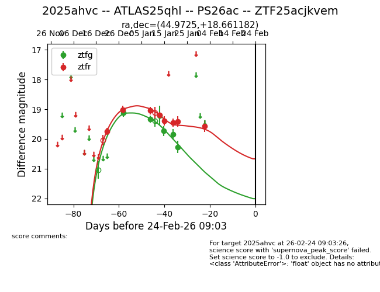
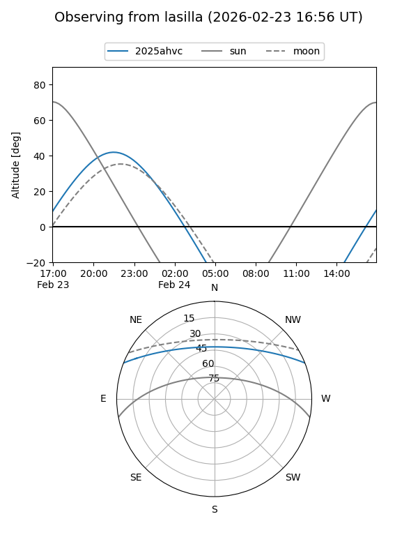
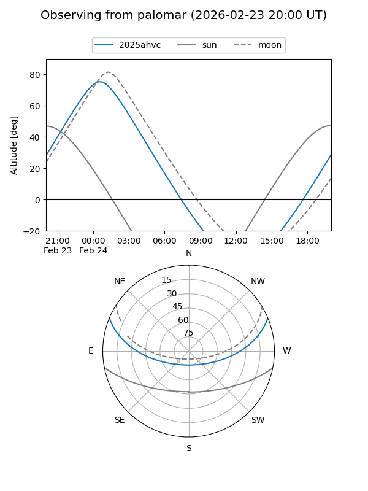
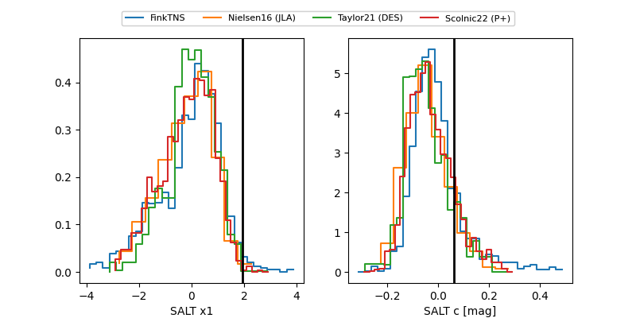

2025ahvc
Target 2025ahvc at 2025-12-31 17:00
Aliases and brokers:
FINK:
Lasair:
ALeRCE:
TNS:
YSE:
alt names
ZTF25acjkvem (ztf,fink_ztf)
2025ahvc (tns,yse)
Coordinates:
equatorial (ra, dec) = 44.9725,+18.66118
equatorial (HMS+DMS) = 02:59:53.40,+18:39:40.25
galactic (l, b) = (160.6725,-34.63099)
Flags:
Photometry:
last ztfg=19.12, ztfr=19.01
1 ztfg, 2 ztfr detections
Lightcurve

Visibility


Additional plots
